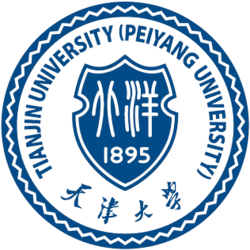

About Me
I am a second-year Ph.D. student in the Department of Electrical and Computer Engineering at Northeastern University, advised by Prof. Yun Raymond Fu. Before starting my Ph.D., I worked full-time as an Algorithm Engineer at Huawei Noah’s Ark Lab. I received my master’s degree from Tianjin University, where I was advised by Prof. Xiaojie Guo. My research interests focus on Efficient and Scalable AI, including Model Quantization, Multimodal Large Language Models, and Visual Understanding.
I am currently looking for research internship opportunities for Summer 2026. Thanks for any referrals or for reaching out if there is a potential fit!
News
- 2026.04One paper is accepted by ACL 2026
- 2026.02One paper is accepted by CVPR 2026
- 2025.11One paper is accepted by NeurIPS 2025
- 2025.09One paper is accepted by EMNLP 2025
- 2025.06One paper selected as ICCV 2025 Highlight
- 2024.06Start my Ph.D. at Northeastern University
Experiences
|
SMILE Lab, Northeastern University, Boston Graduate Student, Jun. 2024 – Now Supervisor: Prof. Yun Raymond Fu |
|
|
Wyze Labs, Inc., San Jose Research Intern, Jun. 2025 – Dec. 2025 Supervisors: Wei Li, Lin Chen, Neil Rodrigues |
|
|
Noah’s Ark Lab, Huawei Technologies, Shanghai Algorithm Engineer, Jun. 2022 – Oct. 2023 Supervisors: Yunhe Wang, Jie Hu |
|
|
Meituan, Beijing Research Intern, Nov. 2021 – Dec. 2021 |
|
|
Tianjin University, Tianjin Graduate Student, Sep. 2019 – Jan. 2022 Supervisors: Xiaojie Guo |
 |
Publications
ACBQ: Adaptive Cross-Block Quantization of Large Language Models
ACL, 2025.
Post-Training Quantization with Outlier Awareness for Image Super-Resolution
ICCV Highlight, 2025.
arXiv
Code
The Indra Representation Hypothesis
NeurIPS, 2025.
arXiv
Code
Representation Potentials of Foundation Models for Multimodal Alignment: A Survey
EMNLP, 2025.
arXiv
Code
IFT:Image Fusion Transformer for Ghost-free High Dynamic Range Imaging
Arxiv, 2023.
arXiv
Code
NTIRE 2023 Challenge on Image Denoising: Methods and Results
NTIRE, First Place.
arXiv
Code
IPT-V2: Efficient Image Processing Transformer with Mixed Self-Attention
Arxiv, 2023.
arXiv
Code
Image Demoiréing with a Dual-Domain Distilling Network
ICME Oral, 2021.
arXiv
Code
Professional Activities
- Reviewer for CVPR, ECCV, ICLR, TPAMI